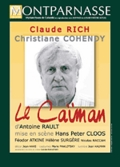
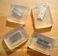

30 juillet 2006
Je suis assis sur une étagère dans le train. En face un vieil homme barbu me propose de la poudre de Betel Nuts. Sous lui une femme voilée demande à un jeune homme de lui fermer la fenêtre. À deux mètres et dix personnes de là, un sosie de Groucho Marx a les deux poignets tenus par un moustachu jovial qui lui fait taper dans ses mains. Près d’eux une fillette dort sur le bedon d’un vieil homme habillé tout en blanc.
10 juin 2006
Cet article est obsolète.
Quand j’étais jeune, enfin très jeune, à cet âge où les garçons hésitent encore à couper pour la 1ère fois le duvet qui vient ombrer leurs tempes roses, et où ils font des concours de crachats pour voir qui a le plus long, à cet âge donc, j’avoue, après tout j’étais jeune, je suivais le foot. Pas au point d’aller casser du supporter adverse à coups de packs de kro, non, mais je suivais avec ferveur toutes les prestations télévisées de Thierry Roland (les matchs, pas Téléfoot quand même, c’était avant ma lobotomie), je connaissais le nom de dizaines de joueurs et je pouvais soutenir une conversation sur le classement du championnat de l’année précédente… indispensable pour briller dans les cours de récré.
27 mai 2006
Swades est un Bollywood à part. Pas par sa durée (210 minutes) ni par son casting (Sharukh est bien là), mais par sa portée. J’en vois déjà qui sourient : « Facile de faire plus profond que ces bobines de guimauve kitschouille qu’on nous sert au kilomètre ! ». Ok vous n’aimez pas les histoires d’amour impossible entre jeunes et beaux milliardaires qui roulent en ferrari et chantent et dansent dans de la soie et des collines verdoyantes ? Pas grave, Swades va beaucoup plus loin : Swades c’est l’histoire d’un Indien expatrié, cadre à la Nasa, qui revient au pays pour deux semaines afin de ramener aux States sa nounou vieillissante.
20 mai 2006
Je croyais qu’il n’y avait pas d’horloges dans les casinos. Je parle bien sûr des temples du stupre où sévissent mafieux, paumés, et miséreuses siliconées, pas des supermarchés où sévissent madame Brié et sa voisine. On lit ça partout, l’abolition des repères temporels pour garder les joueurs plus longtemps. Même sur l’amusante encyclopédie du savoir inutile. Mais je suis allé vérifier à Macao, l’enfer du jeu. Ben je vous le dis, on nous bourre le mou, il y avait bien des horloges autour des tapis verts où des centaines de pauvres mains crispées, folles d’espoir, lançaient à contre-coeur les derniers jetons du ménage pour enrichir un manager bouffi qui pendant ce temps devait faire revenir sa graisse dorée dans un ennui suffisant, au bord d’une piscine, à quelques milliers de kilomètres de là…
19 mai 2006
Je viens de faire 5/20 à AllLookSame, ce qui prouve qu’il est aussi absurde que nauséabond de vouloir différencier physiquement un Japonais d’un Coréen. Ce déterminisme physiologique fait résonner le souvenir de plomb de la phrénologie, délire de bien-pensants nécrophiles que l’on pensait relégué aux caves poussiéreuses du musée des horreurs. Ou alors je suis nul.
Peu importe, nous dirons que c’est un touriste Japonais qui est monté ce soir dans le RER presque vide, un masque anti-particules ceignant son asiatique minois, et s’est assis sur la banquette d’à côté.
13 mai 2006
Accident de voiture, la femme d’In-su est dans le coma. À l’hôpital il rencontre Seo-young qui pleure, son mari aussi est dans le coma, il était dans la même voiture. L’attente commence pour In-su et Seo-young, qui découvrent très vite que leurs époux étaient amants.
11 mai 2006
Mon dernier billet présentait le plugin ComBack pour DotClear qui permet aux auteurs d’un blog de répondre aux commentaires de leurs visiteurs. Pourquoi avoir créé une nouvelle table ? Pourquoi un nouvel écran de gestion ? Pourquoi le ciel est bleu ? Autant de questions brûlantes qui trouvent leur réponse ici (sauf une)…
11 mai 2006

5 jan 2009 : Le portage ComBack pour DotClear2 est disponible ici
Pour répondre à un commentaire avec DotClear, la seule option était d’ajouter un commentaire normal. C’est contraignant car il faut citer le comm auquel on répond, ça apparaît 3 pages plus bas etc.
Pour ceux qui ne connaissent pas over-blog, cette plate-forme propose une fonctionnalité bien pratique dans la liste des commentaires côté administration : Répondre à un commentaire.
6 mai 2006

Hier je suis allé voir « Le Caïman » au Théâtre Montparnasse. Cette riante comédie raconte la nuit fatale d’un philosophe maniaco-dépressif, maître à penser d’une génération marxiste, et de sa femme militante communiste. Inspiré par l’histoire de Louis Althusser qui étrangla sa femme en 1980 dans leur appartement de la rue d’Ulm, la pièce est une succession de confrontations entre le philosophe et sa soeur bigote, son psy renommé, son ancien élève devenu prêtre, et surtout sa femme. Au-delà de l’histoire d’un couple étouffant, c’est le thème du rapport de force qui est au coeur de ces dialogues : rapport de force entre les deux femmes, entre le psy qui philosophe et le philosophe qui connaît trop bien les mécanismes de l’analyse, entre l’ancien élève et son professeur qui obtient de lui une entrevue avec le Pape uniquement afin d’exercer son pouvoir, entre le maître à penser et sa femme trop prévenante, qui le pousse à revenir sur le devant de la scène pour y défendre ses idées à elle. Le philosophe fait semblant, joue des rôles pour séduire et dominer son petit monde, mais la conclusion tragique n’est finalement que la démonstration du pouvoir de sa femme. Les acteurs, notamment Claude Rich et Christiane Cohendy, sont excellents, la mise en scène sobre et belle, et cette pièce noire qui vous prend aux tripes est de celles dont on aimerait avoir le texte pour le relire.
1 mai 2006

On peut être trash et soigner son hygiène. Mais se sécher les cheveux dans la baignoire ça fait ringard, Cloclo c’était il y a presque 30 ans… Heureusement, cette boutique a inventé le savon avec une vraie lame de rasoir au milieu. À $6 l’unité voici de quoi se fendre la poire… À quand le tapis de bain à clous, le pétard-coton-tige, ou la crème hydratante avec du vitriol au fond du pot ?